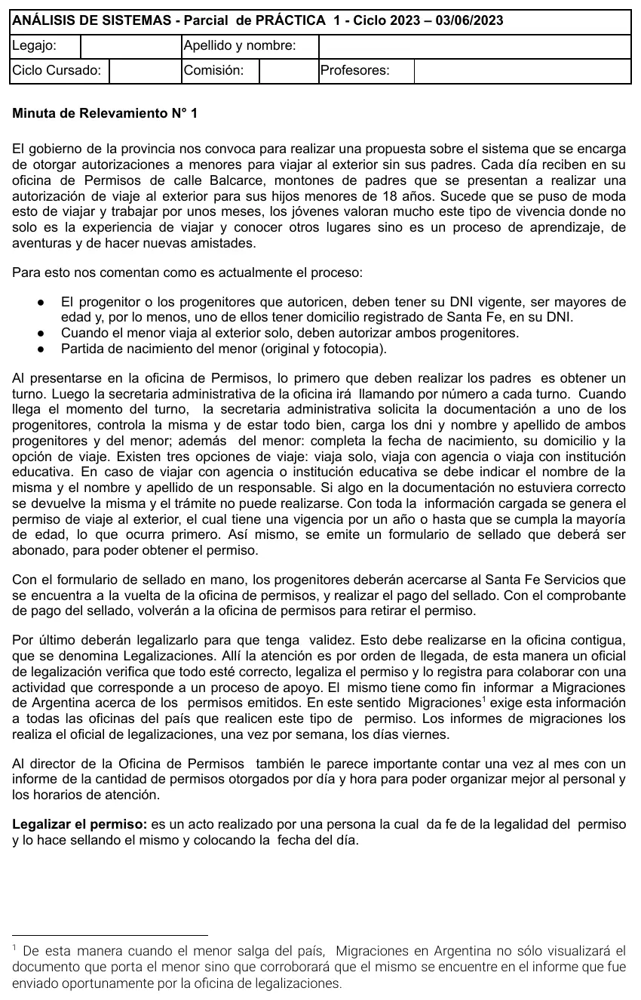
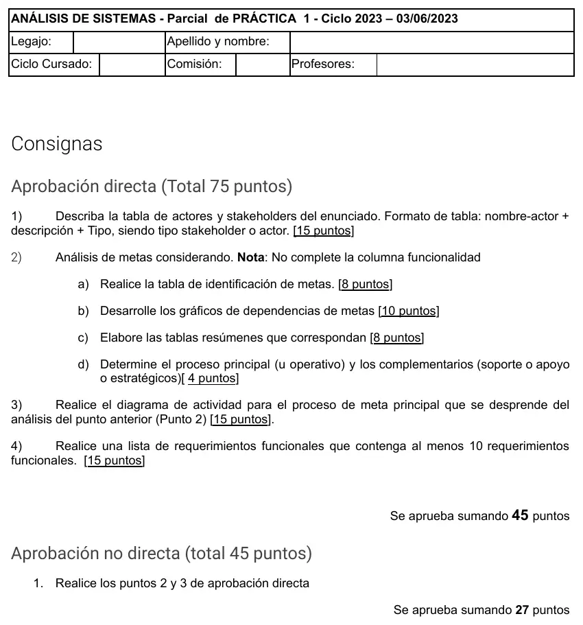

1° parcial, 03/06/2023. Permisos de viaje
1° parcial, 03/06/2023
Enunciado




Propuesta de respuesta
Respuesta no verificada. La propuso Luta Studios con inteligencia artificial y ningún docente la revisó. Puede tener errores.
1. Tabla de actores y stakeholders
| Nombre | Descripción | Tipo |
|---|---|---|
| Progenitores | Sacan turno, presentan la documentación, pagan el sellado, retiran el permiso y lo llevan a legalizar | Actor |
| Secretaria administrativa | Llama por turno, controla la documentación, carga los datos, genera el permiso, emite el formulario de sellado y entrega el permiso | Actor |
| Oficial de legalización | Verifica el permiso, lo legaliza, lo registra y arma el informe semanal para Migraciones | Actor |
| Director de la Oficina de Permisos | Recibe el informe mensual de permisos por día y hora | Actor |
| Migraciones | Recibe el informe semanal y controla al menor en la salida del país | Actor |
| Santa Fe Servicios | Cobra el sellado y entrega el comprobante | Stakeholder |
| Menor | Es a quien se le otorga el permiso para viajar | Stakeholder |
| Agencia o institución educativa | Viaja con el menor. Se registran su nombre y el de un responsable | Stakeholder |
2. Análisis de metas
a) Tabla de identificación de metas, sin la columna de funcionalidad como pide la consigna.
| Id | Actor | Actividad | Meta |
|---|---|---|---|
M01 | Progenitores | Retirar el permiso | Obtener permiso de viaje para el menor |
M02 | Progenitores | Obtener turno | Obtener turno |
M03 | Progenitores | Pagar el sellado en Santa Fe Servicios | Pagar sellado |
M04 | Progenitores | Llevar el permiso a Legalizaciones | Legalizar permiso |
M05 | Secretaria administrativa | Controlar la documentación | Validar documentación |
M06 | Secretaria administrativa | Cargar los datos de progenitores y menor | Generar permiso |
M07 | Secretaria administrativa | Emitir el formulario de sellado | Emitir formulario de sellado |
M08 | Secretaria administrativa | Entregar el permiso contra el comprobante | Entregar permiso |
M09 | Oficial de legalización | Verificar, sellar y fechar el permiso | Dar fe de la legalidad |
M10 | Oficial de legalización | Registrar el permiso y armar el informe de los viernes | Informar permisos emitidos a Migraciones |
M11 | Migraciones | Corroborar en la salida que el permiso esté informado | Controlar salida de menores |
M12 | Director | Pedir el informe mensual por día y hora | Organizar personal y horarios de atención |
F01 | Secretaria administrativa | Devolver la documentación incorrecta | Devolver documentación incorrecta |
Intra-actor: M02, M03 y M04 subordinan a M01, y M05 a M06. Inter-actor: M06 y M08 subordinan a M01, M07 a M03, M09 a M04 y M10 a M11. F01 es obstáculo de M01. M02 y M07 coinciden con su actividad.
b) Gráficos de dependencias. La flecha apunta a la meta que subordina. La meta obstáculo va punteada. Tocá el dibujo para verlo en pantalla completa.
c) Tablas resumen
| Actor primario | Meta independiente | Descripción breve | Otros actores | Proceso | Alcance |
|---|---|---|---|---|---|
| Progenitores | M01 Obtener permiso de viaje para el menor | Presentan la documentación, pagan el sellado, retiran el permiso y lo legalizan | Secretaria administrativa, Santa Fe Servicios, oficial de legalización | Otorgar permiso de viaje al exterior | Sistema |
| Migraciones | M11 Controlar salida de menores | Cada viernes el oficial le informa los permisos emitidos en la semana | Oficial de legalización | Informar permisos a Migraciones | Sistema |
| Director | M12 Organizar personal y horarios de atención | Una vez por mes recibe la cantidad de permisos otorgados por día y hora | — | Informar permisos otorgados | Sistema |
d) Procesos. El principal u operativo es Otorgar permiso de viaje al exterior. Informar permisos a Migraciones es complementario de apoyo, como dice el relato. Informar permisos otorgados es complementario estratégico, porque le sirve al director para organizar el personal y los horarios.
3. Diagrama de actividad
El proceso de la meta principal M01, tal como funciona hoy. Tocá el dibujo para verlo en pantalla completa.
4. Lista de requerimientos funcionales
Con la forma acción + objeto(s) + (para qué) + (para quién) + (comentarios imprescindibles).
| ID | Requerimiento |
|---|---|
R01 | Generar turno de atención en la oficina de Permisos, para los progenitores |
R02 | Informar próximo turno a atender, para que la secretaria administrativa llame por número |
R03 | Registrar datos del trámite (DNI, nombre y apellido de progenitores y menor, fecha de nacimiento y domicilio del menor y opción de viaje), por parte de la secretaria administrativa |
R04 | Validar que los progenitores sean mayores de edad y que al menos uno tenga domicilio de Santa Fe en su DNI |
R05 | Validar que estén cargados los dos progenitores cuando el menor viaja solo |
R06 | Registrar agencia o institución educativa y nombre y apellido del responsable, cuando el menor viaja con ellas |
R07 | Generar permiso de viaje al exterior con su vencimiento (un año o la mayoría de edad del menor, lo que ocurra primero) |
R08 | Emitir formulario de sellado del permiso, para que los progenitores lo paguen |
R09 | Registrar pago del sellado a partir del comprobante, al entregar el permiso |
R10 | Registrar legalización del permiso con la fecha del día, por parte del oficial de legalización |
R11 | Generar informe de permisos legalizados en la semana, para Migraciones (los viernes) |
R12 | Generar informe mensual de cantidad de permisos otorgados por día y hora, para el director |
Respuesta no verificada. Puede tener errores.
Se armó con la página del 1° parcial (actores y stakeholders, análisis de metas, diagrama de actividad y lista de requerimientos). La tabla de actores sigue la del final del 29/05/23, que pidió el mismo formato.
Quedó en duda: Santa Fe Servicios, el menor y la agencia van como stakeholders porque no interactúan con el sistema de la oficina, y se podrían discutir. El material no muestra cómo dibuja la cátedra una meta obstáculo en el grafo: acá va punteada. Para la tabla resumen de Migraciones se tomó como actor primario a Migraciones, que exige el informe, aunque lo arma el oficial. El relato no dice qué pasa con la documentación devuelta, por eso esa rama termina en flujo final. El orden de los paréntesis del requerimiento cambia entre la plantilla y el teórico del 28/06/25.
¿Cómo te fue?
Marcá cada tema del examen.
- Actores y stakeholdersActores y stakeholders, en 1° parcial
- Análisis de metasAnálisis de metas, en 1° parcial
- Diagrama de actividadDiagrama de actividad, en 1° parcial
- RequerimientosRequerimientos, en 1° parcial